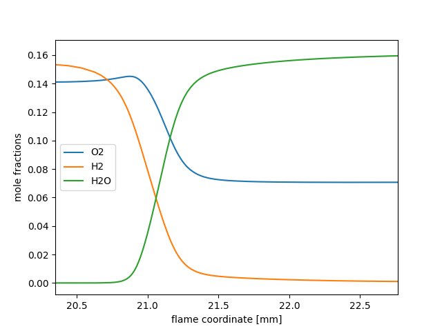

Note
Go to the end to download the full example code.
Laminar flame speed calculation#
A freely-propagating, premixed hydrogen flat flame with multicomponent transport properties.
Requires: cantera >= 3.0, matplotlib >= 2.0
from pathlib import Path
import numpy as np
import matplotlib.pyplot as plt
import cantera as ct
# Simulation parameters
p = ct.one_atm # pressure [Pa]
Tin = 300.0 # unburned gas temperature [K]
reactants = 'H2:1.1, O2:1, AR:5' # premixed gas composition
width = 0.03 # m
loglevel = 1 # amount of diagnostic output (0 to 8)
# Solution object used to compute mixture properties, set to the state of the
# upstream fuel-air mixture
gas = ct.Solution('h2o2.yaml')
gas.TPX = Tin, p, reactants
# Set up flame object
f = ct.FreeFlame(gas, width=width)
f.set_refine_criteria(ratio=3, slope=0.06, curve=0.12)
f.show()
# Solve with mixture-averaged transport model
f.transport_model = 'mixture-averaged'
f.solve(loglevel=loglevel, auto=True)
if "native" in ct.hdf_support():
output = Path() / "adiabatic_flame.h5"
else:
output = Path() / "adiabatic_flame.yaml"
output.unlink(missing_ok=True)
# Solve with the energy equation enabled
f.save(output, name="mix", description="solution with mixture-averaged transport")
f.show()
print(f"mixture-averaged flamespeed = {f.velocity[0]:7f} m/s")
# Solve with multi-component transport properties
f.transport_model = 'multicomponent'
f.solve(loglevel) # don't use 'auto' on subsequent solves
f.show()
print(f"multicomponent flamespeed = {f.velocity[0]:7f} m/s")
f.save(output, name="multi", description="solution with multicomponent transport")
# write the velocity, temperature, density, and mole fractions to a CSV file
f.save('adiabatic_flame.csv', basis="mole", overwrite=True)
>>>>>>>>>>>>>>>>>>>>>>>>>>>>>>>>> reactants <<<<<<<<<<<<<<<<<<<<<<<<<<<<<<<<<
Mass Flux: 1.339 kg/m^2/s
Temperature: 300 K
Mass Fractions:
H2 0.009478
O2 0.1368
AR 0.8538
>>>>>>>>>>>>>>>>>>>>>>>>>>>>>>>>> flame <<<<<<<<<<<<<<<<<<<<<<<<<<<<<<<<<
Pressure: 1.013e+05 Pa
-------------------------------------------------------------------------------
z velocity spread_rate T lambda eField
-------------------------------------------------------------------------------
0 1 0 300 0 0
0.006 1 0 300 0 0
0.009 1 0 300 0 0
0.0105 2.206 0 698.2 0 0
0.012 3.411 0 1096 0 0
0.015 5.822 0 1893 0 0
0.018 5.822 0 1893 0 0
0.024 5.822 0 1893 0 0
0.03 5.822 0 1893 0 0
-------------------------------------------------------------------------------
z Uo H2 H O O2
-------------------------------------------------------------------------------
0 0 0.009478 0 0 0.1368
0.006 0 0.009478 0 0 0.1368
0.009 0 0.009478 0 0 0.1368
0.0105 0 0.00711 4.692e-08 8.204e-06 0.1179
0.012 0 0.004741 9.384e-08 1.641e-05 0.09903
0.015 0 4.422e-06 1.877e-07 3.282e-05 0.06129
0.018 0 4.422e-06 1.877e-07 3.282e-05 0.06129
0.024 0 4.422e-06 1.877e-07 3.282e-05 0.06129
0.03 0 4.422e-06 1.877e-07 3.282e-05 0.06129
-------------------------------------------------------------------------------
z OH H2O HO2 H2O2 AR
-------------------------------------------------------------------------------
0 0 0 0 0 0.8538
0.006 0 0 0 0 0.8538
0.009 0 0 0 0 0.8538
0.0105 0.0001366 0.02109 2.319e-07 1.338e-08 0.8538
0.012 0.0002732 0.04218 4.638e-07 2.675e-08 0.8538
0.015 0.0005463 0.08437 9.276e-07 5.351e-08 0.8538
0.018 0.0005463 0.08437 9.276e-07 5.351e-08 0.8538
0.024 0.0005463 0.08437 9.276e-07 5.351e-08 0.8538
0.03 0.0005463 0.08437 9.276e-07 5.351e-08 0.8538
-------------------------------------------------------------------------------
z N2
-------------------------------------------------------------------------------
0 0
0.006 0
0.009 0
0.0105 0
0.012 0
0.015 0
0.018 0
0.024 0
0.03 0
>>>>>>>>>>>>>>>>>>>>>>>>>>>>>>>>> products <<<<<<<<<<<<<<<<<<<<<<<<<<<<<<<<<
-------------------------------------------------------------------------------
z
-------------------------------------------------------------------------------
0
************ Solving on 9 point grid with energy equation enabled ************
..............................................................................
Attempt Newton solution of steady-state problem.
Newton steady-state solve failed.
Attempt 10 timesteps.
Final timestep info: dt= 1.898e-05 log(ss)= 6.49
Attempt Newton solution of steady-state problem.
Newton steady-state solve succeeded.
Problem solved on [9] point grid(s).
Expanding domain to accommodate flame thickness. New width: 0.06 m
##############################################################################
Refining grid in flame.
New points inserted after grid points 0 1 2 3 4 5 6
to resolve AR H H2 H2O H2O2 HO2 O O2 OH T velocity
##############################################################################
*********** Solving on 16 point grid with energy equation enabled ************
..............................................................................
Attempt Newton solution of steady-state problem.
Newton steady-state solve failed.
Attempt 10 timesteps.
Final timestep info: dt= 1.898e-05 log(ss)= 6.714
Attempt Newton solution of steady-state problem.
Newton steady-state solve failed.
Attempt 10 timesteps.
Final timestep info: dt= 9.01e-06 log(ss)= 7.051
Attempt Newton solution of steady-state problem.
Newton steady-state solve succeeded.
Problem solved on [16] point grid(s).
..............................................................................
grid refinement disabled.
******************** Solving with grid refinement enabled ********************
..............................................................................
Attempt Newton solution of steady-state problem.
Newton steady-state solve succeeded.
Problem solved on [16] point grid(s).
..............................................................................
##############################################################################
Refining grid in flame.
New points inserted after grid points 3 4 5 6 7 8 9
to resolve AR H H2 H2O H2O2 HO2 O O2 OH T velocity
##############################################################################
..............................................................................
Attempt Newton solution of steady-state problem.
Newton steady-state solve failed.
Attempt 10 timesteps.
Final timestep info: dt= 0.0001709 log(ss)= 5.042
Attempt Newton solution of steady-state problem.
Newton steady-state solve succeeded.
Problem solved on [23] point grid(s).
..............................................................................
##############################################################################
Refining grid in flame.
New points inserted after grid points 6 7 8 9 10 11 12 13 14
to resolve AR H H2 H2O H2O2 HO2 O O2 OH T velocity
##############################################################################
..............................................................................
Attempt Newton solution of steady-state problem.
Newton steady-state solve failed.
Attempt 10 timesteps.
Final timestep info: dt= 0.0001709 log(ss)= 5.062
Attempt Newton solution of steady-state problem.
Newton steady-state solve succeeded.
Problem solved on [32] point grid(s).
..............................................................................
##############################################################################
Refining grid in flame.
New points inserted after grid points 9 10 11 12 13 14 15 16 17 18 20 21
to resolve AR H H2 H2O H2O2 HO2 O O2 OH T velocity
##############################################################################
..............................................................................
Attempt Newton solution of steady-state problem.
Newton steady-state solve succeeded.
Problem solved on [44] point grid(s).
..............................................................................
##############################################################################
Refining grid in flame.
New points inserted after grid points 12 13 14 15 16 17 18 19 20 21 22
to resolve AR H H2 H2O H2O2 HO2 O O2 OH T velocity
##############################################################################
..............................................................................
Attempt Newton solution of steady-state problem.
Newton steady-state solve succeeded.
Problem solved on [55] point grid(s).
..............................................................................
##############################################################################
Refining grid in flame.
New points inserted after grid points 14 15 16 17 18 19 20 21 22 23 24 25 26 27
to resolve AR H H2 H2O H2O2 HO2 O O2 OH T velocity
##############################################################################
..............................................................................
Attempt Newton solution of steady-state problem.
Newton steady-state solve succeeded.
Problem solved on [69] point grid(s).
..............................................................................
##############################################################################
Refining grid in flame.
New points inserted after grid points 16 17 18 19 20 21 22 23 24 25 26 27 28 29 30 31 32 33
to resolve AR H H2 H2O H2O2 HO2 O O2 OH T velocity
##############################################################################
..............................................................................
Attempt Newton solution of steady-state problem.
Newton steady-state solve succeeded.
Problem solved on [87] point grid(s).
..............................................................................
##############################################################################
Refining grid in flame.
New points inserted after grid points 19 20 21 22 23 24 25 26 27 28 29 30 31 32 33 34 35 36 37 38 39
to resolve AR H H2O H2O2 HO2 O O2 OH T velocity
##############################################################################
..............................................................................
Attempt Newton solution of steady-state problem.
Newton steady-state solve succeeded.
Problem solved on [108] point grid(s).
..............................................................................
##############################################################################
Refining grid in flame.
New points inserted after grid points 23 24 25 26 27 28 29 30 31 32 33 34 35 36 37 38 39 40 41 42 43 44 45 46
to resolve H H2O2 HO2
##############################################################################
..............................................................................
Attempt Newton solution of steady-state problem.
Newton steady-state solve succeeded.
Problem solved on [132] point grid(s).
..............................................................................
##############################################################################
Refining grid in flame.
New points inserted after grid points 31 32 33 34 35 36
to resolve HO2
##############################################################################
..............................................................................
Attempt Newton solution of steady-state problem.
Newton steady-state solve succeeded.
Problem solved on [138] point grid(s).
..............................................................................
no new points needed in flame
>>>>>>>>>>>>>>>>>>>>>>>>>>>>>>>>> reactants <<<<<<<<<<<<<<<<<<<<<<<<<<<<<<<<<
Mass Flux: 0.9448 kg/m^2/s
Temperature: 300 K
Mass Fractions:
H2 0.009478
O2 0.1368
AR 0.8538
>>>>>>>>>>>>>>>>>>>>>>>>>>>>>>>>> flame <<<<<<<<<<<<<<<<<<<<<<<<<<<<<<<<<
Pressure: 1.013e+05 Pa
-------------------------------------------------------------------------------
z velocity spread_rate T lambda eField
-------------------------------------------------------------------------------
0 0.7058 0 300 0 0
0.006 0.7058 0 300 0 0
0.012 0.7058 0 300 0 0
0.015 0.7058 0 300 0 0
0.0165 0.7058 0 300 0 0
0.018 0.7058 0 300 0 0
0.01875 0.7058 0 300 0 0
0.01912 0.7058 0 300 0 0
0.0195 0.7058 0 300 0 0
0.01987 0.7057 0 300 0 0
0.02006 0.7055 0 300 0 0
0.02025 0.7051 0 300.1 0 0
0.02044 0.7044 0 300.3 0 0
0.02053 0.704 0 300.7 0 0
0.02062 0.7045 0 302 0 0
0.02067 0.7061 0 303.5 0 0
0.02072 0.7103 0 306.5 0 0
0.02074 0.7144 0 309 0 0
0.02077 0.721 0 312.7 0 0
0.02079 0.7311 0 318.2 0 0
0.0208 0.7382 0 321.8 0 0
0.02081 0.747 0 326.3 0 0
0.02082 0.7581 0 331.8 0 0
0.02084 0.7718 0 338.6 0 0
0.02084 0.7799 0 342.5 0 0
0.02085 0.7888 0 346.9 0 0
0.02085 0.7988 0 351.7 0 0
0.02086 0.8099 0 357 0 0
0.02087 0.8221 0 362.8 0 0
0.02087 0.8357 0 369.2 0 0
0.02088 0.8506 0 376.3 0 0
0.02088 0.867 0 384 0 0
0.02089 0.8758 0 388.2 0 0
0.02089 0.885 0 392.5 0 0
0.02089 0.8947 0 397 0 0
0.02089 0.9047 0 401.8 0 0
0.0209 0.9152 0 406.7 0 0
0.0209 0.9262 0 411.8 0 0
0.0209 0.9376 0 417.2 0 0
0.02091 0.9495 0 422.7 0 0
0.02091 0.9619 0 428.5 0 0
0.02091 0.9748 0 434.5 0 0
0.02092 0.9881 0 440.7 0 0
0.02092 1.002 0 447.1 0 0
0.02092 1.031 0 460.7 0 0
0.02093 1.062 0 475 0 0
0.02094 1.095 0 490.2 0 0
0.02094 1.129 0 506.3 0 0
0.02095 1.165 0 523 0 0
0.02095 1.203 0 540.5 0 0
0.02096 1.242 0 558.6 0 0
0.02096 1.283 0 577.4 0 0
0.02097 1.324 0 596.6 0 0
0.02098 1.367 0 616.3 0 0
0.02098 1.41 0 636.3 0 0
0.02099 1.454 0 656.7 0 0
0.02099 1.498 0 677.3 0 0
0.021 1.543 0 698.2 0 0
0.02101 1.588 0 719.1 0 0
0.02101 1.634 0 740.2 0 0
0.02102 1.679 0 761.3 0 0
0.02102 1.725 0 782.4 0 0
0.02103 1.77 0 803.5 0 0
0.02104 1.815 0 824.5 0 0
0.02104 1.86 0 845.3 0 0
0.02105 1.905 0 866.1 0 0
0.02105 1.949 0 886.6 0 0
0.02106 1.993 0 907 0 0
0.02106 2.036 0 927.1 0 0
0.02107 2.079 0 947 0 0
0.02108 2.122 0 966.7 0 0
0.02108 2.163 0 986.1 0 0
0.02109 2.205 0 1005 0 0
0.02109 2.245 0 1024 0 0
0.0211 2.285 0 1042 0 0
0.02111 2.324 0 1060 0 0
0.02111 2.362 0 1078 0 0
0.02112 2.4 0 1095 0 0
0.02113 2.473 0 1129 0 0
0.02114 2.543 0 1161 0 0
0.02115 2.609 0 1192 0 0
0.02116 2.672 0 1221 0 0
0.02118 2.732 0 1249 0 0
0.02119 2.789 0 1275 0 0
0.0212 2.843 0 1299 0 0
0.02121 2.893 0 1322 0 0
0.02122 2.94 0 1344 0 0
0.02123 2.985 0 1364 0 0
0.02125 3.027 0 1384 0 0
0.02126 3.066 0 1402 0 0
0.02127 3.103 0 1419 0 0
0.02128 3.137 0 1435 0 0
0.0213 3.2 0 1464 0 0
0.02133 3.256 0 1490 0 0
0.02135 3.306 0 1513 0 0
0.02137 3.35 0 1533 0 0
0.0214 3.39 0 1552 0 0
0.02142 3.426 0 1569 0 0
0.02145 3.459 0 1585 0 0
0.02147 3.489 0 1599 0 0
0.02149 3.517 0 1612 0 0
0.02152 3.542 0 1624 0 0
0.02154 3.565 0 1635 0 0
0.02156 3.586 0 1645 0 0
0.02161 3.624 0 1663 0 0
0.02166 3.657 0 1679 0 0
0.0217 3.686 0 1693 0 0
0.02175 3.711 0 1705 0 0
0.0218 3.734 0 1716 0 0
0.02184 3.754 0 1725 0 0
0.02189 3.772 0 1734 0 0
0.02194 3.788 0 1742 0 0
0.02203 3.816 0 1755 0 0
0.02212 3.838 0 1766 0 0
0.02222 3.858 0 1776 0 0
0.02231 3.874 0 1784 0 0
0.02241 3.888 0 1791 0 0
0.0225 3.9 0 1796 0 0
0.02269 3.919 0 1806 0 0
0.02287 3.933 0 1813 0 0
0.02306 3.945 0 1819 0 0
0.02325 3.954 0 1823 0 0
0.02344 3.962 0 1827 0 0
0.02363 3.969 0 1830 0 0
0.024 3.978 0 1835 0 0
0.02438 3.985 0 1838 0 0
0.02475 3.99 0 1841 0 0
0.02513 3.994 0 1843 0 0
0.0255 3.997 0 1845 0 0
0.02625 4.002 0 1847 0 0
0.027 4.005 0 1849 0 0
0.0285 4.009 0 1850 0 0
0.03 4.011 0 1852 0 0
0.033 4.013 0 1853 0 0
0.036 4.014 0 1853 0 0
0.042 4.015 0 1853 0 0
0.048 4.015 0 1854 0 0
0.06 4.015 0 1854 0 0
-------------------------------------------------------------------------------
z Uo H2 H O O2
-------------------------------------------------------------------------------
0 0 0.009478 -2.742e-17 9.585e-17 0.1368
0.006 0 0.009478 -2.259e-21 7.665e-17 0.1368
0.012 0 0.009478 9.497e-23 6.138e-17 0.1368
0.015 0 0.009478 9.241e-23 5.65e-17 0.1368
0.0165 0 0.009478 1.676e-22 1.024e-16 0.1368
0.018 0 0.009478 2.762e-21 1.687e-15 0.1368
0.01875 0 0.009478 3.46e-20 2.113e-14 0.1368
0.01912 0 0.009477 2.317e-19 1.414e-13 0.1368
0.0195 0 0.009475 1.899e-18 1.158e-12 0.1368
0.01987 0 0.009465 1.612e-17 9.752e-12 0.1368
0.02006 0 0.009447 6.757e-17 3.805e-11 0.1368
0.02025 0 0.009402 4.179e-16 1.708e-10 0.1368
0.02044 0 0.009285 4.854e-15 7.936e-10 0.1368
0.02053 0 0.009158 3.937e-14 1.971e-09 0.1369
0.02062 0 0.008931 3.246e-13 5.338e-09 0.1369
0.02067 0 0.008752 1.304e-12 9.475e-09 0.137
0.02072 0 0.008505 5.18e-12 1.773e-08 0.137
0.02074 0 0.008347 1.199e-11 2.529e-08 0.137
0.02077 0 0.008161 2.891e-11 3.715e-08 0.137
0.02079 0 0.007943 7.655e-11 5.646e-08 0.137
0.0208 0 0.00782 1.419e-10 7.137e-08 0.1369
0.02081 0 0.007688 2.78e-10 9.172e-08 0.1369
0.02082 0 0.007546 5.875e-10 1.201e-07 0.1368
0.02084 0 0.007393 1.336e-09 1.605e-07 0.1367
0.02084 0 0.007313 2.135e-09 1.879e-07 0.1366
0.02085 0 0.00723 3.411e-09 2.215e-07 0.1365
0.02085 0 0.007145 5.464e-09 2.631e-07 0.1364
0.02086 0 0.007057 8.763e-09 3.149e-07 0.1363
0.02087 0 0.006966 1.403e-08 3.799e-07 0.1361
0.02087 0 0.006873 2.235e-08 4.619e-07 0.1359
0.02088 0 0.006778 3.534e-08 5.661e-07 0.1358
0.02088 0 0.006681 5.533e-08 6.99e-07 0.1355
0.02089 0 0.006631 6.921e-08 7.795e-07 0.1354
0.02089 0 0.006581 8.622e-08 8.708e-07 0.1353
0.02089 0 0.006531 1.07e-07 9.744e-07 0.1352
0.02089 0 0.00648 1.323e-07 1.092e-06 0.135
0.0209 0 0.006428 1.629e-07 1.225e-06 0.1349
0.0209 0 0.006376 1.998e-07 1.377e-06 0.1347
0.0209 0 0.006324 2.442e-07 1.548e-06 0.1345
0.02091 0 0.006271 2.972e-07 1.742e-06 0.1344
0.02091 0 0.006218 3.602e-07 1.961e-06 0.1342
0.02091 0 0.006164 4.348e-07 2.209e-06 0.134
0.02092 0 0.00611 5.226e-07 2.489e-06 0.1338
0.02092 0 0.006056 6.256e-07 2.803e-06 0.1336
0.02092 0 0.005946 8.828e-07 3.548e-06 0.1331
0.02093 0 0.005836 1.226e-06 4.477e-06 0.1326
0.02094 0 0.005724 1.674e-06 5.628e-06 0.1321
0.02094 0 0.005612 2.249e-06 7.041e-06 0.1316
0.02095 0 0.005499 2.973e-06 8.763e-06 0.131
0.02095 0 0.005385 3.868e-06 1.084e-05 0.1303
0.02096 0 0.005271 4.954e-06 1.335e-05 0.1296
0.02096 0 0.005157 6.252e-06 1.634e-05 0.1289
0.02097 0 0.005043 7.777e-06 1.991e-05 0.1282
0.02098 0 0.004928 9.544e-06 2.414e-05 0.1274
0.02098 0 0.004814 1.156e-05 2.916e-05 0.1266
0.02099 0 0.004699 1.384e-05 3.508e-05 0.1258
0.02099 0 0.004585 1.639e-05 4.206e-05 0.1249
0.021 0 0.004471 1.92e-05 5.027e-05 0.124
0.02101 0 0.004358 2.227e-05 5.988e-05 0.1231
0.02101 0 0.004245 2.561e-05 7.109e-05 0.1221
0.02102 0 0.004132 2.92e-05 8.41e-05 0.1212
0.02102 0 0.00402 3.305e-05 9.912e-05 0.1201
0.02103 0 0.003908 3.713e-05 0.0001164 0.1191
0.02104 0 0.003797 4.144e-05 0.000136 0.1181
0.02104 0 0.003687 4.598e-05 0.0001582 0.117
0.02105 0 0.003577 5.071e-05 0.0001832 0.1159
0.02105 0 0.003468 5.564e-05 0.0002111 0.1148
0.02106 0 0.00336 6.074e-05 0.0002421 0.1136
0.02106 0 0.003252 6.599e-05 0.000276 0.1124
0.02107 0 0.003146 7.137e-05 0.0003131 0.1113
0.02108 0 0.003041 7.686e-05 0.0003533 0.11
0.02108 0 0.002936 8.245e-05 0.0003965 0.1088
0.02109 0 0.002833 8.809e-05 0.0004427 0.1076
0.02109 0 0.002732 9.377e-05 0.0004917 0.1063
0.0211 0 0.002632 9.947e-05 0.0005434 0.105
0.02111 0 0.002533 0.0001051 0.0005976 0.1037
0.02111 0 0.002436 0.0001108 0.000654 0.1025
0.02112 0 0.002341 0.0001163 0.0007124 0.1012
0.02113 0 0.002156 0.0001272 0.0008344 0.09858
0.02114 0 0.001979 0.0001374 0.0009608 0.09602
0.02115 0 0.001812 0.0001469 0.001089 0.0935
0.02116 0 0.001656 0.0001554 0.001217 0.09106
0.02118 0 0.001509 0.0001628 0.001343 0.08872
0.02119 0 0.001374 0.0001691 0.001463 0.08649
0.0212 0 0.001249 0.0001743 0.001577 0.08439
0.02121 0 0.001136 0.0001782 0.001684 0.08243
0.02122 0 0.001033 0.000181 0.001781 0.08061
0.02123 0 0.0009405 0.0001828 0.001869 0.07893
0.02125 0 0.0008575 0.0001835 0.001947 0.07741
0.02126 0 0.0007836 0.0001832 0.002014 0.07602
0.02127 0 0.0007179 0.0001822 0.002071 0.07477
0.02128 0 0.0006598 0.0001805 0.002118 0.07365
0.0213 0 0.0005641 0.0001752 0.002184 0.07176
0.02133 0 0.0004899 0.0001683 0.002218 0.07025
0.02135 0 0.0004325 0.0001604 0.002226 0.06906
0.02137 0 0.0003878 0.0001519 0.002212 0.06812
0.0214 0 0.0003529 0.0001434 0.002182 0.06737
0.02142 0 0.0003251 0.0001349 0.002141 0.06678
0.02145 0 0.0003027 0.0001268 0.002091 0.06631
0.02147 0 0.0002842 0.000119 0.002036 0.06592
0.02149 0 0.0002687 0.0001117 0.001978 0.06561
0.02152 0 0.0002554 0.0001049 0.001918 0.06535
0.02154 0 0.0002438 9.847e-05 0.001858 0.06513
0.02156 0 0.0002335 9.253e-05 0.001798 0.06495
0.02161 0 0.0002159 8.192e-05 0.001682 0.06467
0.02166 0 0.0002008 7.278e-05 0.001573 0.06445
0.0217 0 0.0001875 6.49e-05 0.001472 0.06428
0.02175 0 0.0001755 5.807e-05 0.001378 0.06414
0.0218 0 0.0001647 5.215e-05 0.001292 0.06403
0.02184 0 0.0001548 4.698e-05 0.001213 0.06393
0.02189 0 0.0001457 4.246e-05 0.00114 0.06385
0.02194 0 0.0001374 3.848e-05 0.001073 0.06379
0.02203 0 0.0001226 3.193e-05 0.0009553 0.06369
0.02212 0 0.0001099 2.673e-05 0.0008543 0.06363
0.02222 0 9.896e-05 2.255e-05 0.0007673 0.06358
0.02231 0 8.94e-05 1.918e-05 0.000692 0.06354
0.02241 0 8.106e-05 1.642e-05 0.0006265 0.06352
0.0225 0 7.376e-05 1.415e-05 0.0005694 0.06351
0.02269 0 6.188e-05 1.076e-05 0.0004771 0.06351
0.02287 0 5.249e-05 8.332e-06 0.0004043 0.06351
0.02306 0 4.496e-05 6.564e-06 0.0003462 0.06353
0.02325 0 3.888e-05 5.252e-06 0.0002993 0.06355
0.02344 0 3.391e-05 4.262e-06 0.0002611 0.06357
0.02363 0 2.983e-05 3.506e-06 0.0002297 0.06359
0.024 0 2.38e-05 2.491e-06 0.0001835 0.06363
0.02438 0 1.943e-05 1.834e-06 0.0001501 0.06367
0.02475 0 1.619e-05 1.393e-06 0.0001252 0.0637
0.02513 0 1.374e-05 1.089e-06 0.0001064 0.06373
0.0255 0 1.184e-05 8.72e-07 9.191e-05 0.06375
0.02625 0 9.32e-06 6.096e-07 7.255e-05 0.06379
0.027 0 7.629e-06 4.525e-07 5.957e-05 0.06382
0.0285 0 5.776e-06 2.995e-07 4.53e-05 0.06386
0.03 0 4.724e-06 2.225e-07 3.719e-05 0.06389
0.033 0 3.807e-06 1.619e-07 3.01e-05 0.06391
0.036 0 3.388e-06 1.365e-07 2.685e-05 0.06392
0.042 0 3.123e-06 1.211e-07 2.479e-05 0.06393
0.048 0 3.037e-06 1.163e-07 2.412e-05 0.06393
0.06 0 3.037e-06 1.163e-07 2.412e-05 0.06393
-------------------------------------------------------------------------------
z OH H2O HO2 H2O2 AR
-------------------------------------------------------------------------------
0 -3.621e-16 -2.082e-18 -8.381e-17 2.638e-16 0.8538
0.006 -1.751e-18 -3.621e-16 -1.626e-15 2.63e-16 0.8538
0.012 8.044e-20 -3.376e-16 -1.566e-15 2.63e-16 0.8538
0.015 8.281e-20 2.52e-16 -1.534e-15 2.645e-16 0.8538
0.0165 1.502e-19 1.879e-14 -1.394e-15 3.171e-16 0.8538
0.018 2.474e-18 8.12e-13 4.032e-15 2.874e-15 0.8538
0.01875 3.098e-17 1.364e-11 9.393e-14 4.988e-14 0.8538
0.01912 2.073e-16 1.207e-10 9.073e-13 4.924e-13 0.8538
0.0195 1.701e-15 1.346e-09 1.119e-11 6.195e-12 0.8538
0.01987 1.457e-14 1.538e-08 1.418e-10 7.967e-11 0.8538
0.02006 6.492e-14 7.74e-08 7.816e-10 4.438e-10 0.8538
0.02025 4.917e-13 4.633e-07 5.183e-09 2.971e-09 0.8538
0.02044 7.38e-12 2.861e-06 3.544e-08 2.048e-08 0.8539
0.02053 6.554e-11 8.738e-06 1.171e-07 6.803e-08 0.854
0.02062 5.454e-10 2.981e-05 4.373e-07 2.552e-07 0.8541
0.02067 2.121e-09 6.066e-05 9.479e-07 5.523e-07 0.8542
0.02072 7.866e-09 0.0001306 2.199e-06 1.273e-06 0.8543
0.02074 1.679e-08 0.0001984 3.508e-06 2.008e-06 0.8544
0.02077 3.597e-08 0.0003078 5.765e-06 3.241e-06 0.8545
0.02079 7.865e-08 0.000483 9.659e-06 5.276e-06 0.8546
0.0208 1.215e-07 0.0006091 1.268e-05 6.762e-06 0.8546
0.02081 1.899e-07 0.0007713 1.68e-05 8.688e-06 0.8546
0.02082 3.016e-07 0.0009788 2.24e-05 1.115e-05 0.8547
0.02084 4.882e-07 0.001242 3e-05 1.426e-05 0.8547
0.02084 6.316e-07 0.0014 3.481e-05 1.608e-05 0.8547
0.02085 8.22e-07 0.001579 4.044e-05 1.811e-05 0.8546
0.02085 1.076e-06 0.001779 4.7e-05 2.034e-05 0.8546
0.02086 1.417e-06 0.002004 5.459e-05 2.279e-05 0.8546
0.02087 1.877e-06 0.002256 6.332e-05 2.543e-05 0.8546
0.02087 2.497e-06 0.002537 7.325e-05 2.825e-05 0.8545
0.02088 3.333e-06 0.00285 8.441e-05 3.123e-05 0.8545
0.02088 4.459e-06 0.003196 9.677e-05 3.433e-05 0.8544
0.02089 5.167e-06 0.003383 0.0001034 3.59e-05 0.8544
0.02089 5.986e-06 0.003579 0.0001102 3.749e-05 0.8544
0.02089 6.932e-06 0.003786 0.0001173 3.907e-05 0.8544
0.02089 8.023e-06 0.004002 0.0001245 4.065e-05 0.8543
0.0209 9.276e-06 0.004229 0.0001319 4.221e-05 0.8543
0.0209 1.071e-05 0.004466 0.0001394 4.375e-05 0.8542
0.0209 1.235e-05 0.004714 0.0001469 4.526e-05 0.8542
0.02091 1.42e-05 0.004973 0.0001543 4.671e-05 0.8542
0.02091 1.63e-05 0.005243 0.0001617 4.812e-05 0.8541
0.02091 1.867e-05 0.005524 0.0001688 4.947e-05 0.8541
0.02092 2.131e-05 0.005817 0.0001758 5.074e-05 0.854
0.02092 2.426e-05 0.006121 0.0001823 5.194e-05 0.854
0.02092 3.108e-05 0.006763 0.0001943 5.409e-05 0.8539
0.02093 3.922e-05 0.007451 0.0002043 5.587e-05 0.8538
0.02094 4.871e-05 0.008183 0.0002121 5.727e-05 0.8536
0.02094 5.947e-05 0.008959 0.0002174 5.826e-05 0.8535
0.02095 7.138e-05 0.009777 0.0002202 5.885e-05 0.8534
0.02095 8.421e-05 0.01064 0.0002208 5.905e-05 0.8533
0.02096 9.772e-05 0.01154 0.0002193 5.887e-05 0.8532
0.02096 0.0001116 0.01247 0.000216 5.834e-05 0.853
0.02097 0.0001256 0.01345 0.0002114 5.747e-05 0.8529
0.02098 0.0001394 0.01445 0.0002056 5.631e-05 0.8528
0.02098 0.0001528 0.01549 0.0001992 5.487e-05 0.8526
0.02099 0.0001657 0.01655 0.0001923 5.319e-05 0.8525
0.02099 0.0001781 0.01764 0.0001851 5.13e-05 0.8524
0.021 0.0001898 0.01876 0.0001778 4.923e-05 0.8523
0.02101 0.0002011 0.0199 0.0001706 4.703e-05 0.8522
0.02101 0.000212 0.02106 0.0001636 4.471e-05 0.852
0.02102 0.0002226 0.02224 0.0001568 4.231e-05 0.8519
0.02102 0.0002333 0.02344 0.0001502 3.987e-05 0.8518
0.02103 0.0002442 0.02466 0.0001439 3.741e-05 0.8517
0.02104 0.0002556 0.02589 0.000138 3.496e-05 0.8516
0.02104 0.0002677 0.02713 0.0001323 3.254e-05 0.8516
0.02105 0.0002808 0.02839 0.0001269 3.018e-05 0.8515
0.02105 0.0002951 0.02966 0.0001219 2.79e-05 0.8514
0.02106 0.000311 0.03093 0.0001171 2.571e-05 0.8513
0.02106 0.0003285 0.03222 0.0001125 2.363e-05 0.8513
0.02107 0.000348 0.03351 0.0001082 2.166e-05 0.8512
0.02108 0.0003696 0.03481 0.0001042 1.982e-05 0.8512
0.02108 0.0003934 0.03611 0.0001004 1.811e-05 0.8511
0.02109 0.0004196 0.03741 9.675e-05 1.653e-05 0.8511
0.02109 0.0004482 0.03871 9.333e-05 1.508e-05 0.8511
0.0211 0.0004794 0.04001 9.008e-05 1.376e-05 0.8511
0.02111 0.000513 0.0413 8.701e-05 1.257e-05 0.8511
0.02111 0.0005492 0.04258 8.409e-05 1.15e-05 0.8511
0.02112 0.0005878 0.04385 8.132e-05 1.054e-05 0.8511
0.02113 0.0006723 0.04635 7.618e-05 8.946e-06 0.8512
0.02114 0.0007652 0.04877 7.151e-05 7.693e-06 0.8513
0.02115 0.0008653 0.05111 6.727e-05 6.717e-06 0.8514
0.02116 0.0009711 0.05333 6.341e-05 5.952e-06 0.8515
0.02118 0.001081 0.05544 5.988e-05 5.344e-06 0.8517
0.02119 0.001193 0.05742 5.667e-05 4.848e-06 0.8518
0.0212 0.001306 0.05926 5.372e-05 4.431e-06 0.852
0.02121 0.001417 0.06096 5.104e-05 4.072e-06 0.8521
0.02122 0.001527 0.06252 4.858e-05 3.755e-06 0.8523
0.02123 0.001633 0.06394 4.633e-05 3.472e-06 0.8524
0.02125 0.001735 0.06523 4.427e-05 3.218e-06 0.8526
0.02126 0.001832 0.0664 4.238e-05 2.988e-06 0.8527
0.02127 0.001923 0.06745 4.065e-05 2.781e-06 0.8528
0.02128 0.002009 0.06839 3.905e-05 2.594e-06 0.853
0.0213 0.002161 0.06998 3.625e-05 2.275e-06 0.8531
0.02133 0.00229 0.07125 3.383e-05 2.012e-06 0.8533
0.02135 0.002398 0.07227 3.174e-05 1.794e-06 0.8534
0.02137 0.002486 0.0731 2.991e-05 1.613e-06 0.8535
0.0214 0.002556 0.07378 2.829e-05 1.462e-06 0.8536
0.02142 0.002611 0.07434 2.684e-05 1.333e-06 0.8536
0.02145 0.002653 0.07481 2.553e-05 1.223e-06 0.8537
0.02147 0.002684 0.07521 2.434e-05 1.129e-06 0.8537
0.02149 0.002707 0.07556 2.325e-05 1.048e-06 0.8537
0.02152 0.002721 0.07586 2.225e-05 9.767e-07 0.8538
0.02154 0.002729 0.07613 2.132e-05 9.145e-07 0.8538
0.02156 0.002731 0.07638 2.046e-05 8.598e-07 0.8538
0.02161 0.002722 0.0768 1.892e-05 7.684e-07 0.8538
0.02166 0.002702 0.07716 1.756e-05 6.948e-07 0.8538
0.0217 0.002673 0.07748 1.635e-05 6.344e-07 0.8538
0.02175 0.002638 0.07776 1.527e-05 5.841e-07 0.8538
0.0218 0.002598 0.07802 1.429e-05 5.415e-07 0.8538
0.02184 0.002556 0.07825 1.341e-05 5.051e-07 0.8538
0.02189 0.002513 0.07846 1.261e-05 4.736e-07 0.8538
0.02194 0.002468 0.07864 1.188e-05 4.461e-07 0.8538
0.02203 0.002377 0.07897 1.061e-05 4.006e-07 0.8538
0.02212 0.002286 0.07925 9.535e-06 3.639e-07 0.8538
0.02222 0.002198 0.07949 8.611e-06 3.334e-07 0.8538
0.02231 0.002113 0.0797 7.813e-06 3.077e-07 0.8538
0.02241 0.002031 0.07988 7.121e-06 2.857e-07 0.8538
0.0225 0.001954 0.08004 6.517e-06 2.667e-07 0.8538
0.02269 0.001814 0.08029 5.542e-06 2.359e-07 0.8538
0.02287 0.001688 0.0805 4.77e-06 2.111e-07 0.8538
0.02306 0.001576 0.08067 4.15e-06 1.908e-07 0.8538
0.02325 0.001476 0.0808 3.648e-06 1.739e-07 0.8538
0.02344 0.001387 0.08092 3.238e-06 1.595e-07 0.8538
0.02363 0.001307 0.08102 2.9e-06 1.473e-07 0.8538
0.024 0.001177 0.08116 2.402e-06 1.284e-07 0.8538
0.02438 0.00107 0.08127 2.041e-06 1.137e-07 0.8538
0.02475 0.0009819 0.08136 1.774e-06 1.021e-07 0.8538
0.02513 0.0009081 0.08142 1.573e-06 9.285e-08 0.8538
0.0255 0.0008463 0.08148 1.42e-06 8.538e-08 0.8538
0.02625 0.0007546 0.08156 1.219e-06 7.487e-08 0.8538
0.027 0.0006856 0.08161 1.09e-06 6.744e-08 0.8538
0.0285 0.0005997 0.08168 9.554e-07 5.892e-08 0.8538
0.03 0.0005444 0.08172 8.851e-07 5.395e-08 0.8538
0.033 0.0004906 0.08175 8.299e-07 4.958e-08 0.8538
0.036 0.0004637 0.08177 8.074e-07 4.761e-08 0.8538
0.042 0.0004458 0.08178 7.943e-07 4.638e-08 0.8538
0.048 0.0004398 0.08179 7.902e-07 4.598e-08 0.8538
0.06 0.0004398 0.08179 7.902e-07 4.598e-08 0.8538
-------------------------------------------------------------------------------
z N2
-------------------------------------------------------------------------------
0 0
0.006 0
0.012 0
0.015 0
0.0165 0
0.018 0
0.01875 0
0.01912 0
0.0195 0
0.01987 0
0.02006 0
0.02025 0
0.02044 0
0.02053 0
0.02062 0
0.02067 0
0.02072 0
0.02074 0
0.02077 0
0.02079 0
0.0208 0
0.02081 0
0.02082 0
0.02084 0
0.02084 0
0.02085 0
0.02085 0
0.02086 0
0.02087 0
0.02087 0
0.02088 0
0.02088 0
0.02089 0
0.02089 0
0.02089 0
0.02089 0
0.0209 0
0.0209 0
0.0209 0
0.02091 0
0.02091 0
0.02091 0
0.02092 0
0.02092 0
0.02092 0
0.02093 0
0.02094 0
0.02094 0
0.02095 0
0.02095 0
0.02096 0
0.02096 0
0.02097 0
0.02098 0
0.02098 0
0.02099 0
0.02099 0
0.021 0
0.02101 0
0.02101 0
0.02102 0
0.02102 0
0.02103 0
0.02104 0
0.02104 0
0.02105 0
0.02105 0
0.02106 0
0.02106 0
0.02107 0
0.02108 0
0.02108 0
0.02109 0
0.02109 0
0.0211 0
0.02111 0
0.02111 0
0.02112 0
0.02113 0
0.02114 0
0.02115 0
0.02116 0
0.02118 0
0.02119 0
0.0212 0
0.02121 0
0.02122 0
0.02123 0
0.02125 0
0.02126 0
0.02127 0
0.02128 0
0.0213 0
0.02133 0
0.02135 0
0.02137 0
0.0214 0
0.02142 0
0.02145 0
0.02147 0
0.02149 0
0.02152 0
0.02154 0
0.02156 0
0.02161 0
0.02166 0
0.0217 0
0.02175 0
0.0218 0
0.02184 0
0.02189 0
0.02194 0
0.02203 0
0.02212 0
0.02222 0
0.02231 0
0.02241 0
0.0225 0
0.02269 0
0.02287 0
0.02306 0
0.02325 0
0.02344 0
0.02363 0
0.024 0
0.02438 0
0.02475 0
0.02513 0
0.0255 0
0.02625 0
0.027 0
0.0285 0
0.03 0
0.033 0
0.036 0
0.042 0
0.048 0
0.06 0
>>>>>>>>>>>>>>>>>>>>>>>>>>>>>>>>> products <<<<<<<<<<<<<<<<<<<<<<<<<<<<<<<<<
-------------------------------------------------------------------------------
z
-------------------------------------------------------------------------------
0
mixture-averaged flamespeed = 0.705816 m/s
..............................................................................
Attempt Newton solution of steady-state problem.
Newton steady-state solve succeeded.
Problem solved on [138] point grid(s).
..............................................................................
no new points needed in flame
>>>>>>>>>>>>>>>>>>>>>>>>>>>>>>>>> reactants <<<<<<<<<<<<<<<<<<<<<<<<<<<<<<<<<
Mass Flux: 0.9646 kg/m^2/s
Temperature: 300 K
Mass Fractions:
H2 0.009478
O2 0.1368
AR 0.8538
>>>>>>>>>>>>>>>>>>>>>>>>>>>>>>>>> flame <<<<<<<<<<<<<<<<<<<<<<<<<<<<<<<<<
Pressure: 1.013e+05 Pa
-------------------------------------------------------------------------------
z velocity spread_rate T lambda eField
-------------------------------------------------------------------------------
0 0.7206 0 300 0 0
0.006 0.7206 0 300 0 0
0.012 0.7206 0 300 0 0
0.015 0.7206 0 300 0 0
0.0165 0.7206 0 300 0 0
0.018 0.7206 0 300 0 0
0.01875 0.7206 0 300 0 0
0.01912 0.7206 0 300 0 0
0.0195 0.7206 0 300 0 0
0.01987 0.7205 0 300 0 0
0.02006 0.7203 0 300 0 0
0.02025 0.72 0 300 0 0
0.02044 0.7192 0 300.2 0 0
0.02053 0.7187 0 300.5 0 0
0.02062 0.7188 0 301.5 0 0
0.02067 0.7198 0 302.7 0 0
0.02072 0.723 0 305.1 0 0
0.02074 0.7264 0 307.3 0 0
0.02077 0.732 0 310.5 0 0
0.02079 0.7409 0 315.3 0 0
0.0208 0.7473 0 318.6 0 0
0.02081 0.7555 0 322.7 0 0
0.02082 0.7658 0 327.8 0 0
0.02084 0.7788 0 334.1 0 0
0.02084 0.7865 0 337.8 0 0
0.02085 0.7952 0 341.9 0 0
0.02085 0.8049 0 346.5 0 0
0.02086 0.8158 0 351.6 0 0
0.02087 0.8279 0 357.2 0 0
0.02087 0.8414 0 363.5 0 0
0.02088 0.8563 0 370.4 0 0
0.02088 0.8728 0 378 0 0
0.02089 0.8817 0 382.1 0 0
0.02089 0.891 0 386.4 0 0
0.02089 0.9008 0 390.9 0 0
0.02089 0.9111 0 395.6 0 0
0.0209 0.9218 0 400.6 0 0
0.0209 0.933 0 405.7 0 0
0.0209 0.9448 0 411.1 0 0
0.02091 0.957 0 416.7 0 0
0.02091 0.9698 0 422.5 0 0
0.02091 0.983 0 428.5 0 0
0.02092 0.9968 0 434.8 0 0
0.02092 1.011 0 441.4 0 0
0.02092 1.041 0 455.1 0 0
0.02093 1.074 0 469.8 0 0
0.02094 1.108 0 485.3 0 0
0.02094 1.144 0 501.7 0 0
0.02095 1.182 0 518.8 0 0
0.02095 1.221 0 536.7 0 0
0.02096 1.262 0 555.3 0 0
0.02096 1.304 0 574.5 0 0
0.02097 1.348 0 594.2 0 0
0.02098 1.392 0 614.4 0 0
0.02098 1.437 0 634.9 0 0
0.02099 1.483 0 655.8 0 0
0.02099 1.53 0 676.9 0 0
0.021 1.576 0 698.2 0 0
0.02101 1.623 0 719.6 0 0
0.02101 1.671 0 741 0 0
0.02102 1.718 0 762.5 0 0
0.02102 1.765 0 784 0 0
0.02103 1.812 0 805.4 0 0
0.02104 1.859 0 826.7 0 0
0.02104 1.905 0 847.9 0 0
0.02105 1.951 0 868.9 0 0
0.02105 1.997 0 889.7 0 0
0.02106 2.042 0 910.3 0 0
0.02106 2.087 0 930.6 0 0
0.02107 2.131 0 950.7 0 0
0.02108 2.175 0 970.5 0 0
0.02108 2.218 0 990.1 0 0
0.02109 2.26 0 1009 0 0
0.02109 2.302 0 1028 0 0
0.0211 2.343 0 1047 0 0
0.02111 2.383 0 1065 0 0
0.02111 2.422 0 1083 0 0
0.02112 2.461 0 1100 0 0
0.02113 2.535 0 1134 0 0
0.02114 2.607 0 1166 0 0
0.02115 2.674 0 1197 0 0
0.02116 2.739 0 1226 0 0
0.02118 2.8 0 1253 0 0
0.02119 2.858 0 1279 0 0
0.0212 2.912 0 1304 0 0
0.02121 2.963 0 1327 0 0
0.02122 3.011 0 1348 0 0
0.02123 3.056 0 1369 0 0
0.02125 3.099 0 1388 0 0
0.02126 3.139 0 1406 0 0
0.02127 3.176 0 1422 0 0
0.02128 3.211 0 1438 0 0
0.0213 3.274 0 1467 0 0
0.02133 3.331 0 1492 0 0
0.02135 3.381 0 1515 0 0
0.02137 3.426 0 1536 0 0
0.0214 3.467 0 1554 0 0
0.02142 3.503 0 1571 0 0
0.02145 3.536 0 1587 0 0
0.02147 3.567 0 1601 0 0
0.02149 3.594 0 1613 0 0
0.02152 3.62 0 1625 0 0
0.02154 3.643 0 1636 0 0
0.02156 3.665 0 1646 0 0
0.02161 3.703 0 1664 0 0
0.02166 3.737 0 1680 0 0
0.0217 3.766 0 1694 0 0
0.02175 3.792 0 1706 0 0
0.0218 3.815 0 1717 0 0
0.02184 3.836 0 1726 0 0
0.02189 3.854 0 1735 0 0
0.02194 3.87 0 1743 0 0
0.02203 3.898 0 1756 0 0
0.02212 3.922 0 1767 0 0
0.02222 3.941 0 1777 0 0
0.02231 3.958 0 1785 0 0
0.02241 3.972 0 1792 0 0
0.0225 3.985 0 1798 0 0
0.02269 4.004 0 1807 0 0
0.02287 4.019 0 1814 0 0
0.02306 4.031 0 1820 0 0
0.02325 4.041 0 1825 0 0
0.02344 4.049 0 1829 0 0
0.02363 4.055 0 1832 0 0
0.024 4.065 0 1837 0 0
0.02438 4.072 0 1840 0 0
0.02475 4.078 0 1843 0 0
0.02513 4.082 0 1845 0 0
0.0255 4.085 0 1847 0 0
0.02625 4.09 0 1849 0 0
0.027 4.093 0 1850 0 0
0.0285 4.097 0 1852 0 0
0.03 4.1 0 1853 0 0
0.033 4.102 0 1855 0 0
0.036 4.103 0 1855 0 0
0.042 4.103 0 1855 0 0
0.048 4.104 0 1856 0 0
0.06 4.104 0 1856 0 0
-------------------------------------------------------------------------------
z Uo H2 H O O2
-------------------------------------------------------------------------------
0 0 0.009478 4.935e-18 -1.411e-16 0.1368
0.006 0 0.009478 2.426e-22 -1.054e-16 0.1368
0.012 0 0.009478 -1.977e-22 -8.296e-17 0.1368
0.015 0 0.009478 -3.481e-23 -6.736e-17 0.1368
0.0165 0 0.009478 2.066e-22 -1.89e-17 0.1368
0.018 0 0.009478 1.888e-21 1.287e-15 0.1368
0.01875 0 0.009478 2.821e-20 1.757e-14 0.1368
0.01912 0 0.009478 1.961e-19 1.201e-13 0.1368
0.0195 0 0.009476 1.647e-18 1.003e-12 0.1368
0.01987 0 0.009468 1.421e-17 8.599e-12 0.1368
0.02006 0 0.009453 6.033e-17 3.405e-11 0.1368
0.02025 0 0.009415 3.772e-16 1.555e-10 0.1368
0.02044 0 0.009314 4.429e-15 7.344e-10 0.1368
0.02053 0 0.009201 3.66e-14 1.846e-09 0.1368
0.02062 0 0.008994 3.056e-13 5.067e-09 0.1368
0.02067 0 0.008829 1.235e-12 9.059e-09 0.1368
0.02072 0 0.008597 4.888e-12 1.707e-08 0.1368
0.02074 0 0.008447 1.122e-11 2.441e-08 0.1368
0.02077 0 0.008269 2.668e-11 3.593e-08 0.1368
0.02079 0 0.008059 6.904e-11 5.465e-08 0.1368
0.0208 0 0.007939 1.255e-10 6.906e-08 0.1367
0.02081 0 0.00781 2.411e-10 8.87e-08 0.1366
0.02082 0 0.00767 5.02e-10 1.16e-07 0.1366
0.02084 0 0.007519 1.134e-09 1.55e-07 0.1364
0.02084 0 0.007439 1.816e-09 1.813e-07 0.1364
0.02085 0 0.007357 2.915e-09 2.137e-07 0.1363
0.02085 0 0.007272 4.707e-09 2.538e-07 0.1362
0.02086 0 0.007184 7.626e-09 3.038e-07 0.1361
0.02087 0 0.007093 1.235e-08 3.666e-07 0.1359
0.02087 0 0.007 1.994e-08 4.461e-07 0.1358
0.02088 0 0.006904 3.196e-08 5.474e-07 0.1356
0.02088 0 0.006806 5.075e-08 6.771e-07 0.1354
0.02089 0 0.006756 6.395e-08 7.559e-07 0.1353
0.02089 0 0.006705 8.026e-08 8.456e-07 0.1352
0.02089 0 0.006654 1.003e-07 9.475e-07 0.1351
0.02089 0 0.006602 1.249e-07 1.063e-06 0.1349
0.0209 0 0.00655 1.548e-07 1.195e-06 0.1348
0.0209 0 0.006497 1.912e-07 1.345e-06 0.1346
0.0209 0 0.006443 2.351e-07 1.516e-06 0.1345
0.02091 0 0.00639 2.879e-07 1.709e-06 0.1343
0.02091 0 0.006336 3.51e-07 1.929e-06 0.1341
0.02091 0 0.006281 4.261e-07 2.177e-06 0.134
0.02092 0 0.006226 5.151e-07 2.458e-06 0.1338
0.02092 0 0.006171 6.198e-07 2.775e-06 0.1336
0.02092 0 0.006059 8.829e-07 3.529e-06 0.1331
0.02093 0 0.005946 1.237e-06 4.473e-06 0.1327
0.02094 0 0.005832 1.702e-06 5.648e-06 0.1321
0.02094 0 0.005717 2.302e-06 7.094e-06 0.1316
0.02095 0 0.005601 3.061e-06 8.862e-06 0.131
0.02095 0 0.005484 4.002e-06 1.1e-05 0.1304
0.02096 0 0.005367 5.147e-06 1.358e-05 0.1297
0.02096 0 0.00525 6.517e-06 1.668e-05 0.129
0.02097 0 0.005133 8.128e-06 2.036e-05 0.1283
0.02098 0 0.005015 9.996e-06 2.475e-05 0.1275
0.02098 0 0.004897 1.213e-05 2.995e-05 0.1267
0.02099 0 0.00478 1.454e-05 3.611e-05 0.1259
0.02099 0 0.004663 1.722e-05 4.337e-05 0.125
0.021 0 0.004545 2.019e-05 5.192e-05 0.1241
0.02101 0 0.004429 2.343e-05 6.194e-05 0.1232
0.02101 0 0.004312 2.694e-05 7.364e-05 0.1223
0.02102 0 0.004196 3.072e-05 8.724e-05 0.1213
0.02102 0 0.004081 3.475e-05 0.0001029 0.1203
0.02103 0 0.003966 3.903e-05 0.000121 0.1193
0.02104 0 0.003852 4.355e-05 0.0001415 0.1182
0.02104 0 0.003738 4.829e-05 0.0001648 0.1171
0.02105 0 0.003625 5.324e-05 0.000191 0.116
0.02105 0 0.003513 5.837e-05 0.0002202 0.1149
0.02106 0 0.003402 6.369e-05 0.0002525 0.1137
0.02106 0 0.003292 6.915e-05 0.000288 0.1125
0.02107 0 0.003182 7.475e-05 0.0003267 0.1113
0.02108 0 0.003074 8.046e-05 0.0003686 0.1101
0.02108 0 0.002967 8.625e-05 0.0004136 0.1089
0.02109 0 0.002861 9.21e-05 0.0004617 0.1076
0.02109 0 0.002757 9.798e-05 0.0005127 0.1063
0.0211 0 0.002654 0.0001039 0.0005664 0.105
0.02111 0 0.002553 0.0001097 0.0006226 0.1037
0.02111 0 0.002454 0.0001155 0.000681 0.1024
0.02112 0 0.002356 0.0001213 0.0007414 0.1011
0.02113 0 0.002167 0.0001324 0.0008673 0.09849
0.02114 0 0.001987 0.0001428 0.0009975 0.09589
0.02115 0 0.001817 0.0001525 0.001129 0.09334
0.02116 0 0.001658 0.0001611 0.00126 0.09087
0.02118 0 0.00151 0.0001686 0.001388 0.0885
0.02119 0 0.001373 0.000175 0.001511 0.08625
0.0212 0 0.001247 0.0001801 0.001627 0.08413
0.02121 0 0.001133 0.0001839 0.001735 0.08216
0.02122 0 0.00103 0.0001866 0.001833 0.08033
0.02123 0 0.0009375 0.0001882 0.001921 0.07865
0.02125 0 0.0008546 0.0001888 0.001998 0.07713
0.02126 0 0.0007809 0.0001884 0.002065 0.07574
0.02127 0 0.0007157 0.0001872 0.002122 0.07449
0.02128 0 0.000658 0.0001853 0.002168 0.07338
0.0213 0 0.0005632 0.0001796 0.002232 0.0715
0.02133 0 0.00049 0.0001724 0.002264 0.07001
0.02135 0 0.0004334 0.0001642 0.002269 0.06884
0.02137 0 0.0003895 0.0001555 0.002253 0.06791
0.0214 0 0.0003551 0.0001467 0.002221 0.06717
0.02142 0 0.0003277 0.0001381 0.002178 0.06659
0.02145 0 0.0003057 0.0001297 0.002126 0.06612
0.02147 0 0.0002874 0.0001218 0.00207 0.06574
0.02149 0 0.0002721 0.0001143 0.00201 0.06543
0.02152 0 0.0002589 0.0001074 0.001949 0.06518
0.02154 0 0.0002474 0.0001008 0.001888 0.06497
0.02156 0 0.0002371 9.479e-05 0.001827 0.06479
0.02161 0 0.0002195 8.398e-05 0.00171 0.06451
0.02166 0 0.0002043 7.467e-05 0.0016 0.06429
0.0217 0 0.000191 6.664e-05 0.001497 0.06412
0.02175 0 0.0001789 5.968e-05 0.001403 0.06398
0.0218 0 0.000168 5.363e-05 0.001316 0.06386
0.02184 0 0.000158 4.835e-05 0.001236 0.06377
0.02189 0 0.0001488 4.373e-05 0.001162 0.06369
0.02194 0 0.0001404 3.966e-05 0.001094 0.06363
0.02203 0 0.0001254 3.295e-05 0.0009747 0.06353
0.02212 0 0.0001125 2.761e-05 0.0008723 0.06346
0.02222 0 0.0001014 2.333e-05 0.000784 0.06341
0.02231 0 9.165e-05 1.986e-05 0.0007075 0.06338
0.02241 0 8.316e-05 1.702e-05 0.000641 0.06336
0.0225 0 7.573e-05 1.468e-05 0.000583 0.06335
0.02269 0 6.361e-05 1.118e-05 0.000489 0.06334
0.02287 0 5.401e-05 8.672e-06 0.0004148 0.06335
0.02306 0 4.631e-05 6.841e-06 0.0003555 0.06336
0.02325 0 4.008e-05 5.48e-06 0.0003075 0.06338
0.02344 0 3.498e-05 4.451e-06 0.0002685 0.0634
0.02363 0 3.079e-05 3.664e-06 0.0002363 0.06342
0.024 0 2.46e-05 2.607e-06 0.000189 0.06347
0.02438 0 2.01e-05 1.921e-06 0.0001546 0.0635
0.02475 0 1.675e-05 1.461e-06 0.0001291 0.06354
0.02513 0 1.421e-05 1.142e-06 0.0001097 0.06356
0.0255 0 1.226e-05 9.146e-07 9.479e-05 0.06359
0.02625 0 9.646e-06 6.392e-07 7.481e-05 0.06363
0.027 0 7.892e-06 4.741e-07 6.139e-05 0.06366
0.0285 0 5.967e-06 3.13e-07 4.662e-05 0.0637
0.03 0 4.871e-06 2.319e-07 3.821e-05 0.06372
0.033 0 3.912e-06 1.679e-07 3.082e-05 0.06375
0.036 0 3.472e-06 1.41e-07 2.742e-05 0.06376
0.042 0 3.192e-06 1.246e-07 2.525e-05 0.06377
0.048 0 3.101e-06 1.194e-07 2.454e-05 0.06377
0.06 0 3.101e-06 1.194e-07 2.454e-05 0.06377
-------------------------------------------------------------------------------
z OH H2O HO2 H2O2 AR
-------------------------------------------------------------------------------
0 1.35e-16 5.942e-19 -1.056e-16 -1.423e-17 0.8538
0.006 3.044e-19 1.08e-16 1.993e-16 -1.251e-17 0.8538
0.012 -1.432e-19 7.613e-17 4.15e-17 -1.836e-17 0.8538
0.015 -7.112e-20 4.492e-16 3.049e-17 -1.365e-17 0.8538
0.0165 5.916e-20 1.28e-14 1.468e-16 2.901e-17 0.8538
0.018 1.81e-18 5.52e-13 4.069e-15 1.873e-15 0.8538
0.01875 2.555e-17 9.448e-12 7.155e-14 3.623e-14 0.8538
0.01912 1.758e-16 8.508e-11 6.929e-13 3.66e-13 0.8538
0.0195 1.473e-15 9.676e-10 8.693e-12 4.696e-12 0.8538
0.01987 1.283e-14 1.127e-08 1.122e-10 6.156e-11 0.8538
0.02006 5.782e-14 5.761e-08 6.282e-10 3.487e-10 0.8538
0.02025 4.416e-13 3.511e-07 4.243e-09 2.377e-09 0.8538
0.02044 6.715e-12 2.209e-06 2.955e-08 1.669e-08 0.8539
0.02053 6.101e-11 6.844e-06 9.911e-08 5.631e-08 0.854
0.02062 5.176e-10 2.377e-05 3.765e-07 2.151e-07 0.8542
0.02067 2.042e-09 4.895e-05 8.256e-07 4.718e-07 0.8543
0.02072 7.658e-09 0.000107 1.941e-06 1.105e-06 0.8545
0.02074 1.641e-08 0.0001641 3.123e-06 1.763e-06 0.8546
0.02077 3.528e-08 0.0002575 5.181e-06 2.881e-06 0.8547
0.02079 7.72e-08 0.000409 8.768e-06 4.757e-06 0.8548
0.0208 1.191e-07 0.0005194 1.157e-05 6.147e-06 0.8548
0.02081 1.86e-07 0.0006627 1.543e-05 7.968e-06 0.8549
0.02082 2.948e-07 0.0008477 2.071e-05 1.033e-05 0.8549
0.02084 4.763e-07 0.001085 2.795e-05 1.333e-05 0.8549
0.02084 6.156e-07 0.001228 3.256e-05 1.512e-05 0.8549
0.02085 8.007e-07 0.001391 3.799e-05 1.711e-05 0.8549
0.02085 1.048e-06 0.001575 4.436e-05 1.933e-05 0.8549
0.02086 1.381e-06 0.001783 5.178e-05 2.177e-05 0.8549
0.02087 1.83e-06 0.002016 6.038e-05 2.443e-05 0.8549
0.02087 2.437e-06 0.002278 7.023e-05 2.73e-05 0.8548
0.02088 3.261e-06 0.002571 8.139e-05 3.034e-05 0.8548
0.02088 4.377e-06 0.002897 9.386e-05 3.352e-05 0.8548
0.02089 5.081e-06 0.003074 0.0001005 3.515e-05 0.8547
0.02089 5.899e-06 0.00326 0.0001075 3.679e-05 0.8547
0.02089 6.848e-06 0.003456 0.0001147 3.844e-05 0.8547
0.02089 7.945e-06 0.003662 0.0001222 4.009e-05 0.8546
0.0209 9.21e-06 0.003878 0.0001298 4.172e-05 0.8546
0.0209 1.066e-05 0.004105 0.0001375 4.333e-05 0.8546
0.0209 1.233e-05 0.004342 0.0001453 4.492e-05 0.8545
0.02091 1.422e-05 0.004591 0.000153 4.646e-05 0.8545
0.02091 1.637e-05 0.004851 0.0001607 4.794e-05 0.8544
0.02091 1.88e-05 0.005122 0.0001681 4.937e-05 0.8544
0.02092 2.153e-05 0.005405 0.0001754 5.073e-05 0.8544
0.02092 2.457e-05 0.0057 0.0001822 5.2e-05 0.8543
0.02092 3.166e-05 0.006323 0.0001948 5.43e-05 0.8542
0.02093 4.014e-05 0.006993 0.0002053 5.622e-05 0.8541
0.02094 5.006e-05 0.007708 0.0002134 5.772e-05 0.854
0.02094 6.133e-05 0.008467 0.0002189 5.881e-05 0.8539
0.02095 7.379e-05 0.00927 0.0002218 5.947e-05 0.8538
0.02095 8.721e-05 0.01012 0.0002222 5.971e-05 0.8536
0.02096 0.0001013 0.011 0.0002205 5.956e-05 0.8535
0.02096 0.0001157 0.01192 0.0002169 5.903e-05 0.8534
0.02097 0.0001301 0.01288 0.0002119 5.815e-05 0.8533
0.02098 0.0001443 0.01388 0.0002058 5.695e-05 0.8532
0.02098 0.000158 0.0149 0.000199 5.546e-05 0.853
0.02099 0.0001711 0.01596 0.0001918 5.372e-05 0.8529
0.02099 0.0001835 0.01704 0.0001843 5.177e-05 0.8528
0.021 0.0001953 0.01815 0.0001768 4.963e-05 0.8527
0.02101 0.0002064 0.01928 0.0001694 4.734e-05 0.8526
0.02101 0.0002172 0.02044 0.0001622 4.494e-05 0.8525
0.02102 0.0002278 0.02161 0.0001552 4.247e-05 0.8524
0.02102 0.0002384 0.02281 0.0001486 3.995e-05 0.8523
0.02103 0.0002493 0.02402 0.0001422 3.742e-05 0.8522
0.02104 0.0002607 0.02525 0.0001362 3.491e-05 0.8521
0.02104 0.0002729 0.02649 0.0001305 3.243e-05 0.852
0.02105 0.0002862 0.02775 0.0001252 3.002e-05 0.8519
0.02105 0.0003009 0.02902 0.0001201 2.769e-05 0.8519
0.02106 0.0003172 0.03031 0.0001153 2.547e-05 0.8518
0.02106 0.0003353 0.0316 0.0001108 2.335e-05 0.8517
0.02107 0.0003555 0.0329 0.0001066 2.137e-05 0.8517
0.02108 0.0003779 0.03421 0.0001026 1.951e-05 0.8517
0.02108 0.0004027 0.03552 9.882e-05 1.779e-05 0.8516
0.02109 0.0004299 0.03683 9.525e-05 1.621e-05 0.8516
0.02109 0.0004597 0.03814 9.188e-05 1.476e-05 0.8516
0.0211 0.0004921 0.03946 8.868e-05 1.346e-05 0.8516
0.02111 0.0005271 0.04076 8.566e-05 1.228e-05 0.8516
0.02111 0.0005646 0.04206 8.279e-05 1.122e-05 0.8516
0.02112 0.0006047 0.04335 8.007e-05 1.028e-05 0.8516
0.02113 0.0006922 0.04588 7.503e-05 8.717e-06 0.8517
0.02114 0.0007881 0.04835 7.047e-05 7.501e-06 0.8518
0.02115 0.0008912 0.05072 6.631e-05 6.557e-06 0.8519
0.02116 0.0009997 0.05299 6.253e-05 5.822e-06 0.852
0.02118 0.001112 0.05513 5.909e-05 5.237e-06 0.8521
0.02119 0.001226 0.05714 5.594e-05 4.76e-06 0.8523
0.0212 0.001341 0.05901 5.306e-05 4.358e-06 0.8524
0.02121 0.001454 0.06074 5.043e-05 4.009e-06 0.8525
0.02122 0.001564 0.06233 4.803e-05 3.701e-06 0.8527
0.02123 0.001671 0.06377 4.583e-05 3.426e-06 0.8528
0.02125 0.001774 0.06508 4.381e-05 3.177e-06 0.8529
0.02126 0.001871 0.06627 4.197e-05 2.953e-06 0.853
0.02127 0.001962 0.06733 4.027e-05 2.75e-06 0.8531
0.02128 0.002047 0.06828 3.872e-05 2.567e-06 0.8532
0.0213 0.002199 0.06988 3.597e-05 2.254e-06 0.8534
0.02133 0.002327 0.07117 3.361e-05 1.996e-06 0.8535
0.02135 0.002433 0.0722 3.156e-05 1.783e-06 0.8536
0.02137 0.002519 0.07304 2.976e-05 1.605e-06 0.8537
0.0214 0.002589 0.07372 2.817e-05 1.455e-06 0.8538
0.02142 0.002643 0.07429 2.675e-05 1.328e-06 0.8538
0.02145 0.002684 0.07476 2.546e-05 1.22e-06 0.8538
0.02147 0.002715 0.07517 2.429e-05 1.127e-06 0.8539
0.02149 0.002736 0.07552 2.322e-05 1.046e-06 0.8539
0.02152 0.00275 0.07583 2.223e-05 9.761e-07 0.8539
0.02154 0.002757 0.07611 2.132e-05 9.145e-07 0.8539
0.02156 0.00276 0.07636 2.047e-05 8.602e-07 0.8539
0.02161 0.002751 0.07679 1.895e-05 7.695e-07 0.8539
0.02166 0.00273 0.07716 1.761e-05 6.963e-07 0.8539
0.0217 0.002701 0.07748 1.641e-05 6.363e-07 0.8539
0.02175 0.002666 0.07777 1.533e-05 5.861e-07 0.8539
0.0218 0.002626 0.07803 1.436e-05 5.437e-07 0.8539
0.02184 0.002584 0.07827 1.349e-05 5.074e-07 0.8539
0.02189 0.002541 0.07848 1.269e-05 4.759e-07 0.8539
0.02194 0.002496 0.07867 1.196e-05 4.485e-07 0.8539
0.02203 0.002405 0.07901 1.07e-05 4.03e-07 0.8539
0.02212 0.002314 0.07929 9.624e-06 3.663e-07 0.8539
0.02222 0.002226 0.07954 8.7e-06 3.358e-07 0.8539
0.02231 0.00214 0.07975 7.901e-06 3.101e-07 0.8539
0.02241 0.002059 0.07994 7.206e-06 2.88e-07 0.8539
0.0225 0.001981 0.0801 6.6e-06 2.689e-07 0.8539
0.02269 0.00184 0.08036 5.62e-06 2.38e-07 0.8539
0.02287 0.001714 0.08057 4.841e-06 2.132e-07 0.8539
0.02306 0.001601 0.08075 4.216e-06 1.928e-07 0.8539
0.02325 0.0015 0.08089 3.709e-06 1.758e-07 0.8539
0.02344 0.00141 0.081 3.294e-06 1.613e-07 0.8539
0.02363 0.001329 0.0811 2.951e-06 1.49e-07 0.8539
0.024 0.001198 0.08125 2.446e-06 1.3e-07 0.8539
0.02438 0.001089 0.08137 2.078e-06 1.152e-07 0.8539
0.02475 0.0009996 0.08145 1.806e-06 1.035e-07 0.8539
0.02513 0.0009247 0.08152 1.601e-06 9.409e-08 0.8539
0.0255 0.0008618 0.08158 1.445e-06 8.653e-08 0.8539
0.02625 0.0007684 0.08166 1.24e-06 7.587e-08 0.8539
0.027 0.000698 0.08172 1.106e-06 6.832e-08 0.8539
0.0285 0.0006101 0.08178 9.68e-07 5.963e-08 0.8539
0.03 0.0005534 0.08182 8.955e-07 5.455e-08 0.8539
0.033 0.0004979 0.08186 8.381e-07 5.007e-08 0.8539
0.036 0.00047 0.08188 8.147e-07 4.803e-08 0.8539
0.042 0.0004513 0.08189 8.01e-07 4.676e-08 0.8539
0.048 0.000445 0.0819 7.967e-07 4.635e-08 0.8539
0.06 0.000445 0.0819 7.967e-07 4.635e-08 0.8539
-------------------------------------------------------------------------------
z N2
-------------------------------------------------------------------------------
0 -4.474e-19
0.006 9.889e-19
0.012 -3.873e-18
0.015 -7.566e-19
0.0165 3.633e-18
0.018 -7.942e-19
0.01875 -6.145e-18
0.01912 -9.267e-18
0.0195 -7.102e-20
0.01987 7.402e-18
0.02006 -2.668e-17
0.02025 -1.172e-18
0.02044 -1.036e-16
0.02053 -1.239e-16
0.02062 5.143e-16
0.02067 -1.182e-16
0.02072 -1.331e-16
0.02074 6.883e-16
0.02077 8.954e-16
0.02079 9.217e-15
0.0208 3.266e-15
0.02081 -4.375e-15
0.02082 1.14e-15
0.02084 1.13e-15
0.02084 4.913e-15
0.02085 9.868e-16
0.02085 3.904e-15
0.02086 -1.042e-14
0.02087 1.514e-14
0.02087 8.526e-15
0.02088 -1.344e-15
0.02088 7.225e-15
0.02089 1.005e-14
0.02089 2.074e-16
0.02089 -1.47e-17
0.02089 2.198e-15
0.0209 6.633e-15
0.0209 -2.12e-15
0.0209 6.158e-16
0.02091 1.894e-15
0.02091 4.877e-15
0.02091 1.072e-14
0.02092 7.911e-15
0.02092 1.426e-15
0.02092 8.524e-15
0.02093 6.543e-15
0.02094 6.706e-15
0.02094 6.787e-15
0.02095 6.982e-15
0.02095 6.206e-15
0.02096 6.131e-15
0.02096 6.55e-15
0.02097 6.639e-15
0.02098 6.25e-15
0.02098 6.447e-15
0.02099 6.587e-15
0.02099 6.019e-15
0.021 6.368e-15
0.02101 6.644e-15
0.02101 6.886e-15
0.02102 6.355e-15
0.02102 6.605e-15
0.02103 6.559e-15
0.02104 6.582e-15
0.02104 5.803e-15
0.02105 6.902e-15
0.02105 7.816e-15
0.02106 6.378e-15
0.02106 7.365e-15
0.02107 6.618e-15
0.02108 7.577e-15
0.02108 6.846e-15
0.02109 7.098e-15
0.02109 6.91e-15
0.0211 6.408e-15
0.02111 6.588e-15
0.02111 6.871e-15
0.02112 6.416e-15
0.02113 7.147e-15
0.02114 7.023e-15
0.02115 6.947e-15
0.02116 6.515e-15
0.02118 6.847e-15
0.02119 8.409e-15
0.0212 7.14e-15
0.02121 8.447e-15
0.02122 8.798e-15
0.02123 7.385e-15
0.02125 6.236e-15
0.02126 7.94e-15
0.02127 7.07e-15
0.02128 7.203e-15
0.0213 8.132e-15
0.02133 6.959e-15
0.02135 7.693e-15
0.02137 7.403e-15
0.0214 6.784e-15
0.02142 7.696e-15
0.02145 7.069e-15
0.02147 7.664e-15
0.02149 7.306e-15
0.02152 7.426e-15
0.02154 7.865e-15
0.02156 7.664e-15
0.02161 7.645e-15
0.02166 7.035e-15
0.0217 7.461e-15
0.02175 7.733e-15
0.0218 7.498e-15
0.02184 7.496e-15
0.02189 7.356e-15
0.02194 7.522e-15
0.02203 7.566e-15
0.02212 7.516e-15
0.02222 7.338e-15
0.02231 7.555e-15
0.02241 7.532e-15
0.0225 7.537e-15
0.02269 7.483e-15
0.02287 7.465e-15
0.02306 7.705e-15
0.02325 7.523e-15
0.02344 7.306e-15
0.02363 7.435e-15
0.024 7.457e-15
0.02438 7.354e-15
0.02475 7.496e-15
0.02513 7.386e-15
0.0255 7.433e-15
0.02625 7.404e-15
0.027 7.404e-15
0.0285 7.424e-15
0.03 7.424e-15
0.033 7.408e-15
0.036 7.412e-15
0.042 7.417e-15
0.048 7.417e-15
0.06 7.417e-15
>>>>>>>>>>>>>>>>>>>>>>>>>>>>>>>>> products <<<<<<<<<<<<<<<<<<<<<<<<<<<<<<<<<
-------------------------------------------------------------------------------
z
-------------------------------------------------------------------------------
0
multicomponent flamespeed = 0.720586 m/s
Temperature and Heat Release Rate#
# Find the region that covers most of the temperature rise
z = 1000 * f.grid # convert to mm
i_left = np.where(f.T > f.T[0] + 0.01 * (f.T[-1] - f.T[0]))[0][0]
i_right = np.where(f.T > f.T[0] + 0.95 * (f.T[-1] - f.T[0]))[0][0]
z_left = z[i_left]
z_right = z[i_right]
dz = z_right - z_left
z_left -= 0.3 * dz
z_right += 0.3 * dz
fig, ax1 = plt.subplots()
ax1.plot(z, f.heat_release_rate / 1e6, color='C4')
ax1.set_ylabel('heat release rate [MW/m³]', color='C4')
ax1.set(xlabel='flame coordinate [mm]', xlim=[z_left, z_right])
ax2 = ax1.twinx()
ax2.plot(z, f.T, color='C3')
ax2.set_ylabel('temperature [K]', color='C3')
plt.show()
Major Species Profiles#
Minor Species Profiles#
Total running time of the script: (0 minutes 0.832 seconds)